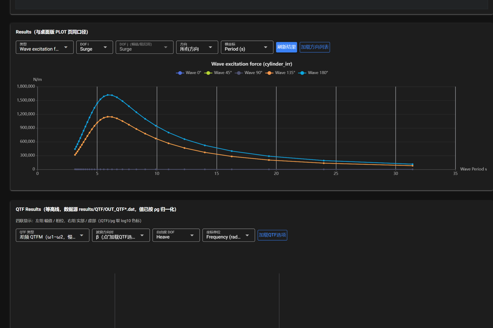
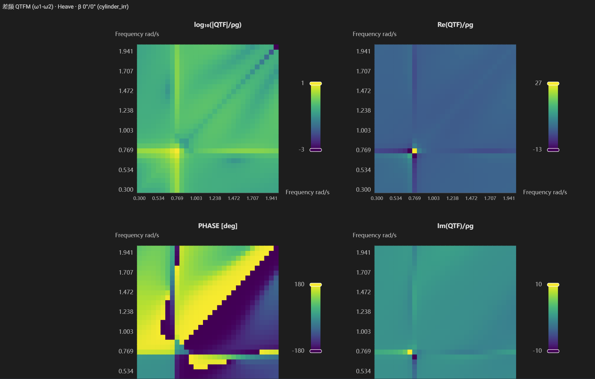
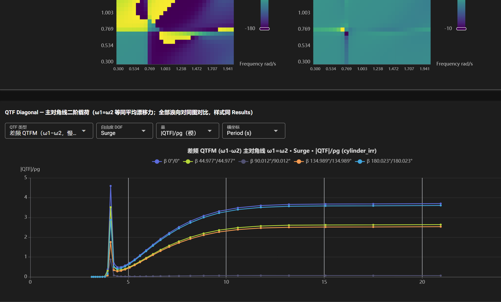

结果查看
BEM 完成后点击 刷新结果 载入数据；加载方向列表 用于载入浪向选项。

Results（一阶结果曲线）
| 控件 | 说明 |
|---|---|
| 类型 | Wave excitation force（激励力）/ RAO / 附加质量 / 辐射阻尼等 |
| DOF i / DOF j | 作用方向与运动方向（转角用/作用矩用两个选择） |
| 方向 | 浪向（可叠画所有方向对比，Wave 0° / 45° / …） |
| 横坐标 | 频率或周期（rad/s / Hz / Period s） |
单位口径：
- 激励力按单位波幅归一化（
Fe(t) = a·|Fe|·cos(ωt − ∠Fe)）：平动力 N/m，转动力矩 N·m/m。 - 附加质量 kg（转动为 kg·m²），辐射阻尼 N·s/m（转动为 N·m·s/rad）。
- 转动 RAO 的数据文件本身就是 deg/m，界面不再做弧度换算。
QTF Results（二阶 QTF 等高线）

- 数据源：
results/QTF/OUT_QTF*.dat（已按 ρg 归一化）。 - 四联图：左列 幅值 / 相位，右列 实部 / 虚部；色标取
log10(|QTF|/ρg)。 - 控件：QTF 类型（差频 QTFM (ω1−ω2) / 和频 QTFP (ω1+ω2) 等）、浪向组合 β、自由度 DOF、横坐标（频率 / 周期）。
- 加载QTF选项：载入
QTF Set的配置以确定可用组合。
QTF Diagonal（主对角线二阶载荷）

- 取
ω1 = ω2的对角项，即等同平均漂移力（mean drift force）口径。 - 全部浪向对同一图对比，样式与 Results 一致；支持
|QTF|/ρg（模）等纵坐标类型与频率 / 周期横坐标切换。